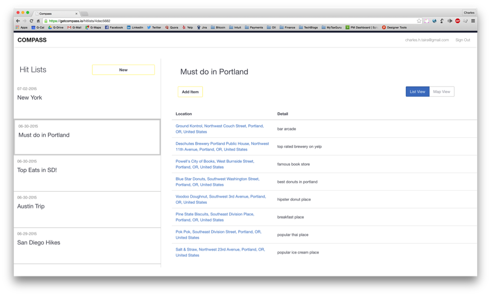
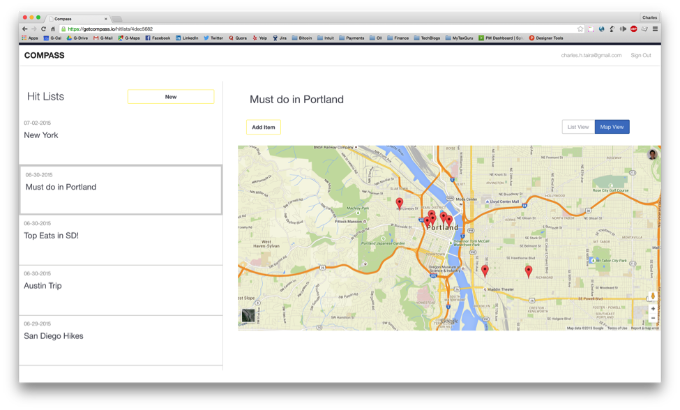
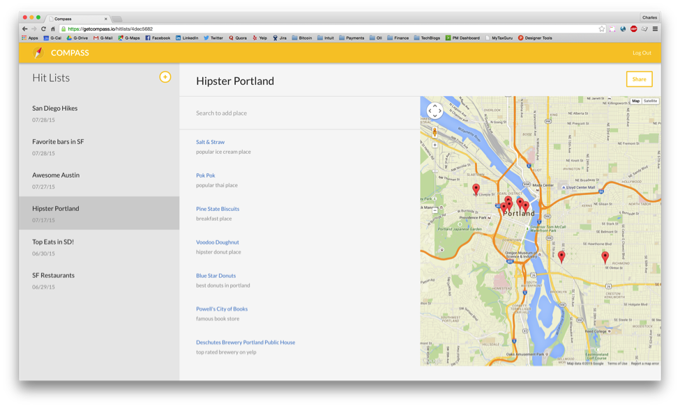

Compass is a web application that allows you to create lists filled places you have always wanted to go.
I designed a web application that allows people to track and share travel recommendations. As part of a team that consisted of one back-end engineer and one front-end engineer, my responsibility was to create a user flow where users can create a hit list, add points of interest and lastly to be able to share their list with friends.
Hard to keep track of travel recommendations.
Provide a overview of services.
People use different tools to capture and share travel recommendations


Map view alone isn’t really that helpful so there is no point in having that option. Instead of having two separate view options, I decided to go back and create a hybrid view that included the list and the map at the same time. This allowed the user to view a list item’s details while also being able to see where it is located on the map. In addition to the feedback, it was time to implement a stylistic voice.
Another feature that was not implemented yet was being able to share a list. Similar to the schema of Google Docs, we resolved to add a share button on the list page.

1. People like to see where other people are going to.
2. Save these places into a list
3. Look up the location of these places